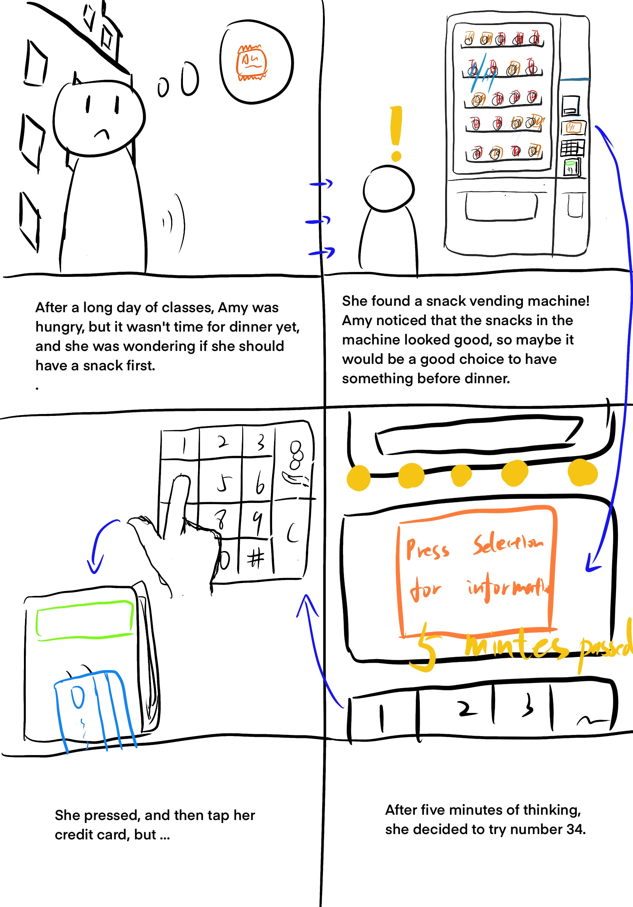

Personas & Storyboarding
The vending machine is a common public interface that we probably interact with it every day.
This is a project about Vending Machines, but also about Users. Trying to step into a user’s shoes, learn how to gather the user’s information, and represent the user is the first thing to do for becoming a UI/UX designer.
This is my beginning point.

Project Overview
Languages: None (Not a programming project)
Techniques: Persona, StoryBoard
For this project, I will show you
- My observations of the people who use vending machines
- The interviews with them
- The Persona I created for them
- The storyboard I created from them
Sketch
The snack vending machine allows users to self-purchase snacks by simply paying and entering a serial number on the keyboard. It tries to make snack buying easier. If you are familiar with it enough, you don’t need to look at this part though :)

Observations and interview summaries from 3 users
User 1
- Slowly walked to the machine and stop.
- Looked at the items inside the machine for a while.
- Bent down and straightened up again.
- Pulled out the phone and looked up at the machine from time to time during the use of the phone.
- Put down the phone and looked at the machine again.
- Entered the serial number on the keyboard, and then tap the card at the card swiper.
- (the item didn’t drop) Entered the serial number again.
- Kept an eye on the item when it is dropping.
- Picked up the item after the item finished dropping.
- Went away.
User 2
- Walked to the machine.
- Looked at the items for a while.
- Took out the card and kept watching.
- Entered the serial number, waited.
- (the item didn’t drop) Waited. Put the card near to the card swiper again, but didn’t swipe or tap. Took the card back and paced back and forth.
- (the screen above the keyboard showed the transaction is closed) Tap the card again, and then entered the serial number.
- (the machine dropped the item).
- Picked up the item, and wait for the screen above the keyboard to went back to the initial state which showed “swipe or tap to begin”.
- Went away at a slow pace.
User 3
- Walked to the machine quickly and directly.
- Pressed the item number.
- Swiped the card. 4. (the item didn’t drop) Knocked the machine.
- Pressed the item number again and swiped the card again.
- (the item dropped).
- Picked the item up.
Interview Summaries
- How strong is your desire to buy something? One user said he already has a target he wants to buy, the other two said they just came to the machine see if they want to buy anything.
- Did you encounter any frustration in the selection process? If so, where? One user said she wanted to see some items’ calories but didn’t. The other two said no.
- Did you have any trouble with the payment process? if so, where? All of them mentioned they are confused about which of the “swipe or tap card”, and “input the serial number” should go first.
- Would you use the vending machine again? All of them said yes.
Persona
A persona is an “image” of the user. It is not one real user, but it can represent users.
Creating personas is helpful for the designer to understand users and organize the user information they gathered.
Amy is a person who is not in a hurry, she wants to look around to see if there is something she wants.
The interface problem Amy is facing is she think she should first input the serial number of the item she want, and then make the payment, but she is wrong.
This persona mainly come from the first two users, their behavior shows that they are not in a hurry.

Bob is going to take an exam in 20 minutes, he is in a hurry and wants to eat something for dinner before the exam.
Bob faced the same problem with Amy.
This persona mainly come from the third users, his behavior shows he is in a hurry.
StoryBoard
This storyboard shows persona’s user journey from start to end. This storyborad for persona 1. Except the first image with the arrow indication, the reading order is from left to right, from top to down.



Conclusion
In this project, we explored the way to gather user information and “organize” user information. This is very useful and is the first step for a UI/UX designer.